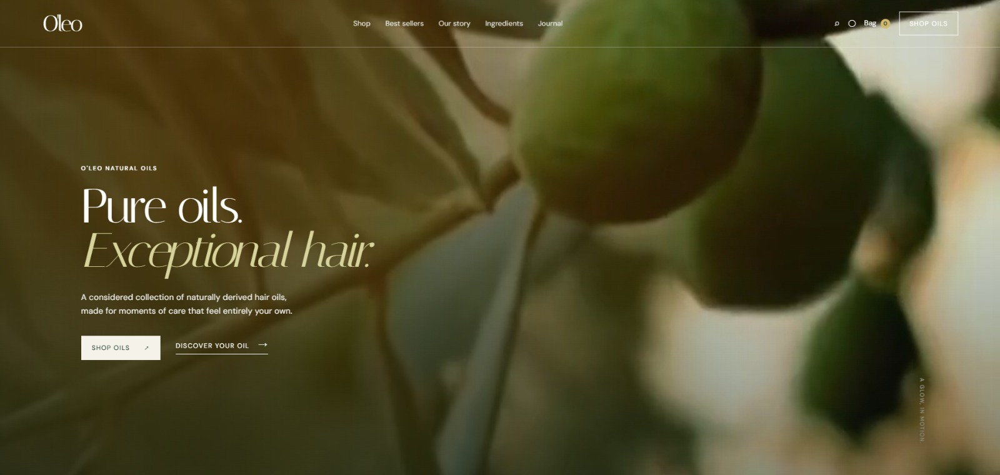

Case study / 03
E-commerce · Brand experience
O’leo
Natural Oils.
Editorial restraint and an intuitive commerce journey for a new kind of care ritual.

The problem
O’leo needed a refined digital presence that could elevate natural hair oils into a distinctive premium brand while making it easy for customers to discover, understand, and choose the right product.
The solution
We designed and developed an editorial-inspired e-commerce experience that combines premium visual direction, intuitive product discovery, ingredient storytelling, and a seamless shopping journey—turning everyday hair care into a considered ritual.